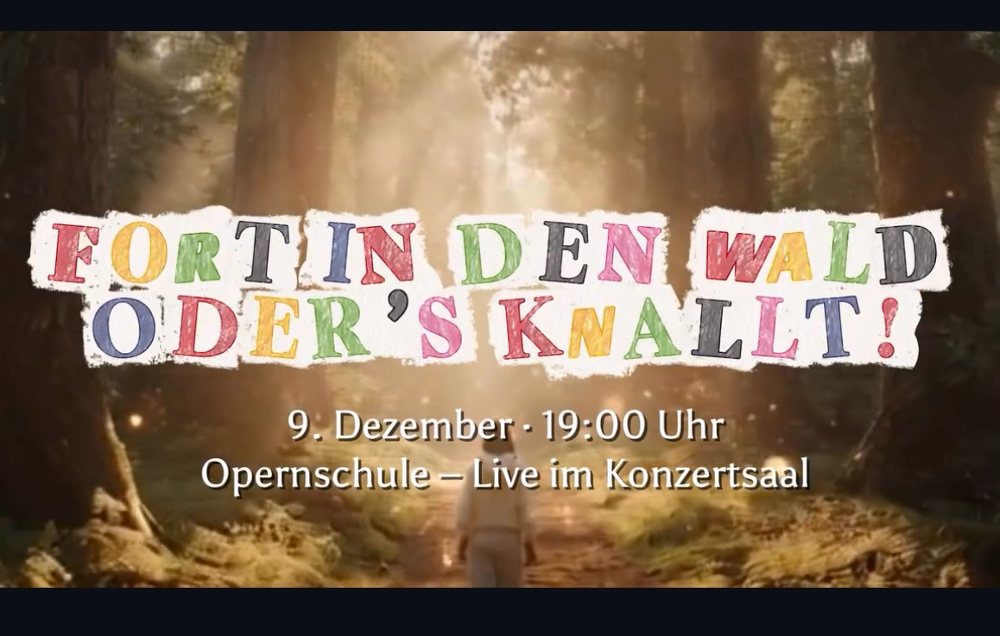

演出日程
查看我的演出和活动安排
21st Seoul International Music Competition
Date: Marz 13.- 22., 2026
Location: Seoul Arts Center
Location: Seoul, Korea
活动详情
Monteverdi: L'incoronazione di Poppea
Date: Jan.25.-Feb.07, 2025
Location: Wilhelma Theater
Location: Stuttgart, Germany
活动详情
FORTUN DEN WALD DER'S KNALLT!
Date: Dez.09, 2025
Location: Konzertsaal der Opernschule HDMK Stuttgart
Location: Stuttgart, Germany
活动详情
10th Renata Tebaldi International Voice Competition（Baroque Section）
Date: Sep 23-27, 2025
Location: San Marino, Italy
活动详情
AbschlussKonzert 6 International Opernwerkstatt Waiblingen
Date: Sep 19, 2025
Location: Ghibellinensaal des Bürgerzentrums Waiblingen
Location: Waiblingen, Germany
活动详情
6th International Opernwerkstatt Waiblingen
Date: Sep 12-19, 2025
Location: Ghibellinensaal des Bürgerzentrums Waiblingen
Location: Waiblingen, Germany
活动详情
2nd Cascais Opera International Vocal Competition
Date: Apr 23-May 4, 2025
Location: Cascais, Portugal
活动详情
Farinelli Wettbewerb
Date: Feb 27-Mar 2, 2025
Location: Badlischen Staatstheaters karlsruhe
Location: Karlsruhe, Germany
活动详情

Daegu International Vocal music Competition Finalist Concert
Date: Aug 30, 2024
Location: Daegu Concert House
Location: Daegu, South Korea
活动详情
15th International Singing Competition for Baroque Opera《Antonio Cesti》
Date: Aug 25-30, 2024
Location: Haus der Musik Innsbruck
Location: Innsbruck, Austria
活动详情
Wilhelm Stenhammar International Music Competition
Date: Jun 7-13, 2024
Location: De Geerhallen
Location: Norrköping, Sweden
活动详情
3rd Vincerò World Singing Competition Finalist Concert
Date: Dec 11, 2023
Location: Teatro Filarmonico Verona
Location: Verona, Italy
活动详情
Bologna International Vocal Competition Winners' Performance
Date: Aug 1, 2023
Location: Saal Mozart
Location: Bologna, Italy
活动详情
Gound Opera_Romeo et Juliette (Stephone)
Date: Jun 30-Jul 1, 2023
Location: Shanghai Conservatory of Music
Location: Shanghai, China
活动详情.png)
The Fairy Queen:Special concert by Baroque Chamber Orchestra of Shanghai Conservatory of Music
Date: Jun 12, 2023
Location: Heluting Music Hall SHCM
Location: Shanghai, China
活动详情
Bright Pearl-Concert of Works from Baroque Period
Date: May 1, 2023
Location: Shangyin Opera House
Location: Shanghai, China
活动详情

Gound Opera_Faust (Siebel)
Date: Aug 7, 2019
Location: Shanghai Conservatory of Music
Location: Shanghai, China
活动详情.png)